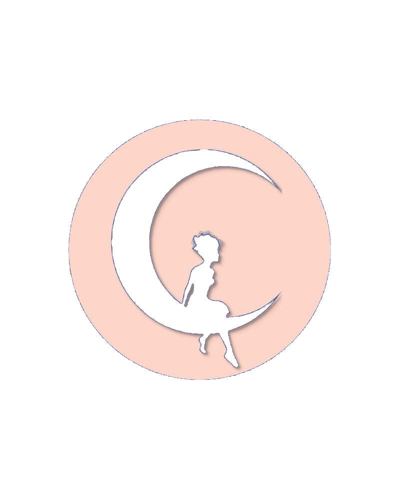

Solusi Bahasa
Terpercaya Untuk Anda.
Kami menawarkan jasa terjemahan, transkripsi, penyelarasan dan penyuntingan naskah yang dikerjakan oleh para ahli bahasa terpercaya.

Tim ahli bahasa yang siap jadi andalan Anda.
Fienyx Translation berdiri pada Desember 2017 dengan satu tekad yang sederhana namun sungguh-sungguh: menghadirkan layanan bahasa berkualitas tinggi yang benar-benar terjangkau dan bisa diandalkan oleh setiap klien yang mempercayakan tulisannya kepada kami.
Nama kami dibangun di atas tiga hal yang tidak kami kompromikan: akurasi yang ketat, komunikasi yang terbuka, dan rasa hormat yang tulus terhadap setiap bahasa yang kami tangani. Itulah yang membedakan kami dari sekadar penyedia jasa terjemahan biasa.
Kami bukan hanya penerjemah. Kami adalah jembatan antarbahasa dan antarbudaya, yang hadir agar pesan Anda tersampaikan dengan tepat, tidak hanya secara kata, tetapi juga secara makna.
Berdiri Desember 2017 · Yogyakarta, IndonesiaMisi Kami
Menjadi mitra bahasa yang selalu bisa diandalkan, menghadirkan solusi kebahasaan yang berdedikasi, terjangkau, dan berkualitas tinggi demi mendukung tujuan klien dan membangun kerja sama jangka panjang.
Visi Kami
Menjadi nama paling dipercaya di bidang terjemahan dan pengolahan teks, menyampaikan makna sejati setiap kata, dan menghubungkan manusia dari berbagai budaya, latar belakang, dan penjuru dunia.
Nilai Kami
- Teliti hingga ke detail terkecil
- Berkomitmen pada hasil terbaik
- Transparan & dapat dipercaya
- Inovatif & solid dalam tim
Yang Kami Yakini
- Tumbuh & terus belajar
- Profesional & menjunjung etika
- Memberi nilai nyata bagi setiap klien

Alur Kerja Hibrida yang Mengutamakan Sentuhan Manusia
Kami memanfaatkan teknologi AI untuk mempercepat tahap awal pemrosesan, lalu menyerahkan hasilnya kepada para ahli kami untuk mengerjakan hal yang paling menentukan: nuansa bahasa, ketepatan teknis, kesesuaian budaya, dan hasil yang bebas dari kesalahan. Di era ketika AI bisa menghasilkan teks dalam hitungan detik, nilai investasi Anda yang sesungguhnya ada pada mitra yang memverifikasi, menyempurnakan, dan bertanggung jawab penuh atas setiap kata.
Tempat bahasa bertemu dengan presisi.
Setiap proyek yang kami kerjakan tunduk pada tiga hal yang tidak bisa ditawar: ketepatan waktu, akurasi yang terverifikasi, dan kerahasiaan penuh. Dengan dukungan tim penerjemah, perevis, dan penyunting yang berpengalaman, dokumen Anda, seberapa pun teknis atau sensitifnya, akan sampai ke tangan Anda dalam kondisi terbaik.

Teks Akademik
Artikel jurnal, abstrak, disertasi, tesis, manuskrip, laporan teknis, hingga makalah ilmiah, semuanya kami terjemahkan, sunting, dan proofreading sesuai standar yang dituntut institusi Anda.
Tingkat Tinggi
Iklan & Publikasi
Brosur, profil perusahaan, flyer, dan naskah iklan, kami lokalisasi agar pesan Anda benar-benar menyentuh audiens yang dituju, sambil tetap menjaga tone dan identitas merek yang telah Anda bangun.
Suara Merek
Penerbitan Buku
Buku teks, lembar kerja, fiksi, dan nonfiksi, kami terjemahkan dengan setia dan disajikan dengan kelancaran yang diharapkan pembaca. Dukungan khusus tersedia untuk jurnal akademik dan penulis indie.
Kreatif
Dokumen Hukum
Kontrak, surat perjanjian, paten, lisensi, akta wasiat, dan formulir resmi, kami terjemahkan dengan presisi tinggi karena satu kekeliruan saja bisa berujung pada konsekuensi hukum yang nyata.
Akurasi Terverifikasi
Transkripsi Cerdas
Transkrip lengkap dengan penanda waktu dan identifikasi pembicara dari file audio maupun video, diaudit oleh manusia, dan siap dioptimalkan untuk SEO, basis data, atau kebutuhan aksesibilitas. Layanan subtitle SRT/VTT tersedia.
Standar 2026Apa yang kami kerjakan,
dijelaskan secara lengkap.
Penerjemahan
Setiap terjemahan yang kami hasilkan berpijak pada dua prinsip yang tidak kami kompromikan: kesetiaan makna dan kelancaran bahasa. Kesetiaan makna memastikan isi sumber tersampaikan secara utuh, tidak ada yang ditambahkan, tidak ada yang hilang. Kelancaran bahasa memastikan hasil terjemahan terasa natural di bahasa target, seperti memang ditulis dari sana sejak awal.
Setiap terjemahan juga kami sesuaikan secara budaya, dilokalisasi berdasarkan demografis, konteks, dan bidang yang relevan, agar pesan Anda benar-benar terasa dekat bagi pembacanya, bukan sekadar dialihbahasakan.
Minta Penawaran- Dokumen akademik dan ilmiah
- Materi hukum dan resmi
- Konten bisnis dan korporat
- Buku dan manuskrip terbit
- Materi iklan dan pemasaran
- Lokalisasi yang disesuaikan secara budaya
- Keahlian lintas bidang dan disiplin ilmu
Transkripsi Cerdas
Ini bukan sekadar ketik ulang audio. Ini adalah Pengolahan Data Cerdas. Kami menghasilkan transkrip lengkap dengan penanda waktu dan identifikasi pembicara yang dirancang sesuai kebutuhan spesifik Anda: optimasi SEO, pengambilan data ke basis data, atau pemenuhan standar aksesibilitas.
Saat transkrip dari AI kerap meleset dan menghasilkan teks yang tidak akurat, proses kami yang diaudit langsung oleh manusia memastikan setiap kata terverifikasi kebenarannya. Untuk keperluan hukum, rekam medis, atau riset akademik, perbedaan itu sangat menentukan.
Minta Penawaran- Transkrip dengan penanda waktu dan identifikasi pembicara
- Output multi-format: JSON, XML, teks biasa
- File subtitle SRT/VTT
- File audio dan video (.mp4, .wav, .mp3, tautan siaran langsung)
- Format transkrip yang dioptimalkan untuk SEO
- Akurasi terverifikasi untuk konteks hukum dan medis
- Audit manusia untuk koreksi kesalahan AI
Penyuntingan Ringan
Pemeriksaan terfokus yang menyisir kesalahan-kesalahan di permukaan dan menghaluskan bagian yang kurang lancar, tanpa menyentuh suara dan struktur asli tulisan Anda. Cocok untuk teks yang sudah hampir matang dan hanya butuh sentuhan akhir agar benar-benar bersih, jelas, dan enak dibaca.
Minta Penawaran- Tata bahasa, ejaan, dan tanda baca
- Kesalahan sintaksis minor
- Kata atau frasa yang membingungkan (disertai komentar)
- Kekeliruan pada fakta umum dan pengetahuan dasar
- Pilihan kata yang tidak sesuai subjek atau pembaca sasaran
- Panduan izin kutipan dan penulisan sitasi
Penyuntingan Berat
Revisi menyeluruh dari sisi struktur maupun bahasa, mulai dari kohesi, koherensi, paralelisme, hingga kejelasan isi secara keseluruhan. Kami memperkuat alur logis, memangkas pengulangan, dan menyesuaikan konten agar relevan secara budaya bagi audiens yang Anda sasar.
Kami membedakan antara Penyuntingan Teknis (presisi dan kejelasan) dan Penyuntingan Kreatif (nada dan gaya), dan menerapkan keduanya sesuai kebutuhan proyek Anda.
Minta Penawaran- Tata bahasa, ejaan, huruf kapital, format, dan tanda baca
- Bahasa yang menghambat komunikasi efektif
- Alur yang tidak logis, pengulangan, dan isi yang saling bertentangan
- Judul, ilustrasi, tabel, angka, dan referensi
- Penyesuaian lintas budaya untuk demografis target
- Pilihan retorika dan gaya bahasa
- Kata ganti dan konjungsi untuk kelancaran bacaan
Proofreading Tanpa Celah Kesalahan
Audit Jaminan Kualitas Linguistik berlapis yang jauh melampaui sekadar cek ejaan. Kami memverifikasi tata bahasa, konsistensi format, dan keselarasan suara merek untuk memastikan dokumen Anda benar-benar siap dipublikasikan.
Anggap layanan ini sebagai garis pertahanan terakhir untuk kampanye pemasaran berdampak tinggi, naskah akademik, dan publikasi apa pun yang tidak bisa mentoleransi satu kesalahan pun.
Minta Penawaran- Audit berlapis tanpa celah kesalahan
- Kesalahan ejaan dan ketik
- Huruf kapital dan tanda baca
- Format: ukuran huruf, tebal/miring, spasi, indentasi
- Pemeriksaan keselarasan suara merek
- Konsistensi format di seluruh dokumen
- Kekeliruan kecil dari penulis atau penyunting
Siklus Hidup Konten
Temukan posisi proyek Anda dalam alur layanan kami, atau gabungkan ketiga tahap sekaligus untuk hasil yang menyeluruh dari awal hingga akhir.
Titik Awal
Transkripsi, kami mengubah rekaman audio, video, atau rapat Anda menjadi teks terstruktur yang siap digunakan.
Nilai Tambah
Penyuntingan, kami mengolah transkrip mentah itu menjadi artikel blog, laporan, atau dokumen teknis yang rapi dan layak dipercaya.
Tahap Akhir
Proofreading, kami melakukan audit kualitas menyeluruh agar dokumen final keluar dari tangan kami bebas dari kesalahan dan siap dipublikasikan.
Lihat sendiri bedanya
ketika ada mitra yang tepat.
Contoh nyata kesalahan terjemahan AI yang berhasil kami temukan dan perbaiki. Klik setiap contoh untuk melihat perbandingannya.
Mulai Bekerja Bersama Mitra yang Bisa Anda Andalkan
Ceritakan proyek Anda dan kami akan menghubungi Anda dalam 1 hingga 2 hari kerja. Tidak ada komitmen apa pun di awal.
Mitra bahasa yang bikin
Anda tenang bekerja.
Ada pertanyaan? Hubungi kami langsung. Kami selalu siap membantu.